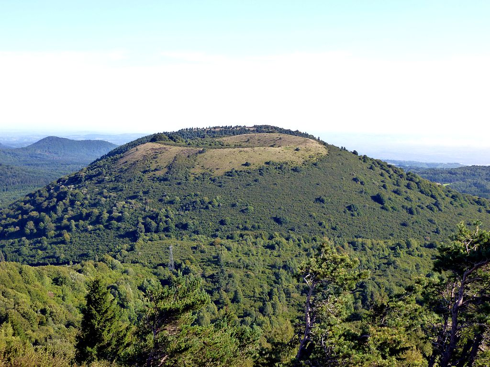

Un petit tour de France
Auvergne
Haute-Loire
Vous pourrez visiter les villes suivantes, dans cet ordre c'est mieux:- Yssingeaux;
- Le Puy-en-Velay;
- Brioude.
Cantal
N'oubliez pas d'aller voir le Viaduc de Garabit, et surtout les volcans d'Auvergne. Basse-Normandie
Orne
Vous pourrez visiter les monuments suivants:- le haras national du Pin;
- la basilique Notre-Dame de Montligeoon;
- le labyrinthe du Champ de la Pierre.
Calvados
Voici la description de plusieurs routes que nous vous proposons.
Le Pays d'Auge
Vous passerez par Cabourg, Deauville et Honfleur.
Les plages du Jour J
Vous pourrez visiter par exemple Omaha Beach et Utah Beach.